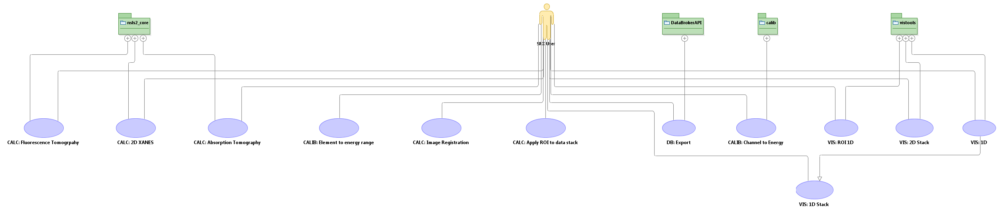

| nsls2_data UML Documentation |
Group Leader: Juergen Thieme
SRX Beamline Scientist: Karen Chen-Weigart
DevTeam Point of Contact: Thomas Caswell
The SRX beamline will have four operating modes, three of which are common.
XANES1: The beam is focused on a specific portion of the sample and the incident energy is scanned across the elemental k-edges
XANES2: The beam is focused on a specific portion of the sample while the sample is rastered across the beam, generating a fluorescence/absorption spectrum at each (x,y) position. The incident energy is then changed such that it is scanned across the elemental k-edges
Fluorescence tomography: The beam is focused on a specific porition of the sample while the sample is rastered across the beam, generating a fluorescence/absorption spectrum at each (x,y) position. The sample is then rotated about an axis perpendicular to the incident beam and the (x,y) raster measurement is repeated. The 3-D fluorescence model of the sample is then constructed via fluorescence tomographic reconstruction techniques.
Full-field imaging: The sample is exposed to the full (unfocused) beam and the absorption image is measured with an image plate. The sample is then rotated about an axis perpendicular to the incident beam and another absorption image is collected. The 3-D model is generated via CT reconstruction techniques (sinograms + inverse radon transform?)
|  |
Properties:
| View | |||
| Name | SRX Use Cases | Type | Usecase Diagram |
| nsls2_data UML Documentation |